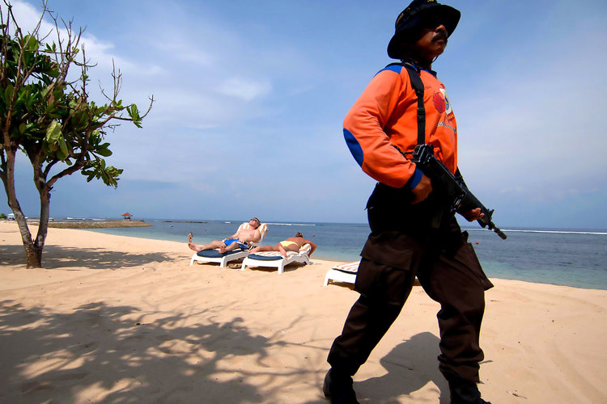
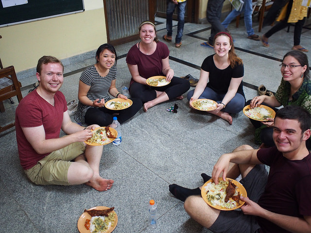

By Tom Helsel
From Thursday June 16th to Sunday June 19th, I had the pleasure of staying in the three of the nicest hotels I’ve ever experienced. Each hotel had five stars, located in Bangalore, Delhi, and Agra respectively. Each hotel had a different atmosphere and level of service, with the level of servitude increasing with each successive hotel.
Every hotel had soft beds, air conditioning, showers, restaurants, clean water, and other services to make one as comfortable as possible. One would expect that I would be having the time of my life; I’d been sleeping on a straw mattress in a room with a rickety fan with a roommate on a bunk bed. I was used to making up in morning praying that there would be hot water for a shower. I was surprised to find that the extra comfort offered by the hotels, while rejuvenating my body, actually made me uncomfortable.

By Jean Pham
Pt was a peaceful Sunday night at Student Christian Movement of India (SCMI) after we had just got back from a 4-day experiential camp with Dream a Dream’s students. I felt quite exhausted yet couldn’t sleep right away. I lay down with my eyes shut, reflecting on all the things we’ve been through in Bangalore. Five of us are currently interning at Dream a Dream, an educational non-profit based in Bangalore that equips young people with life skills using arts and sports – experiential education. As a psychology major, I have always been fascinated by Dream a Dream’s approach. So I came to thier camp with a high hopes – to witness their approach.
As soon as we arrived, the camp organizers downplayed the hierarchical relationship among all participants. So instead of letting the students call us as “Sir” or “Mem”, the camp organizers told all volunteers to think of a name and instructed the students to call us by that name (We were called “Zumi” by the way). Starting on the first day, there were many activities that ignited creativity and confidence. The activities encouraged self-expression and sympathy of all who participated – students and volunteers. These activities were pretty intense in the sense that they required one’s reflections about oneself and one’s motivations for a better life. “Who am I?” “Why am I here?” I have to admit that after participating in these activities for 4 days straight, I was pretty exhausted both physically and mentally. But at the same time, they were all worth it. These activities were pretty straightforward. They do not require a trip to India or 4 days at the camp. But the whole point for us is who we were going through the experience with. I was totally impressed by how much I had learned from the students at the camp and I am sure the “leveling” of heirarchy had something to do with it . Young, energetic and full of potential for a bright future they also face tremendous adversity. I learned a lot about overcoming challenges during those four days